TABLE OF CONTENTS
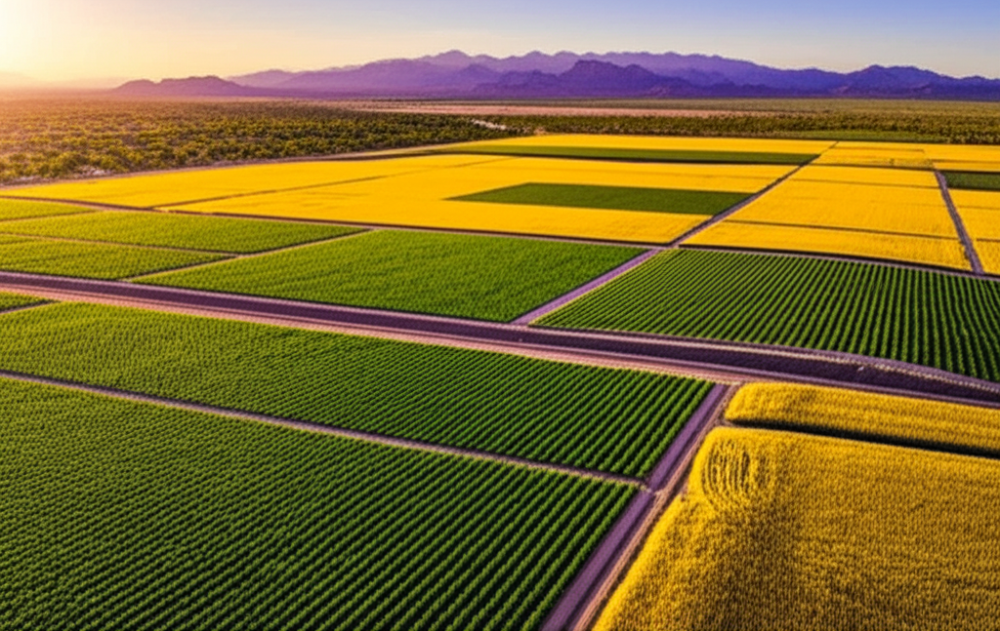
Desert Southwest Regenerative Agriculture
Run: npm run generate to create images
24-Acre Research Site - Desert Southwest
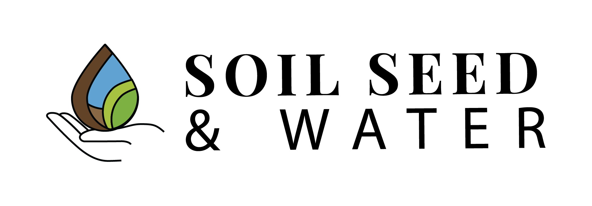

This five-year field research program evaluates multiple soil-building strategies, biological amendments, and crop rotations to determine whether a scalable, profitable regenerative farming system can be developed for the desert Southwest. The project combines industrial hemp grown each January–June with rotations of grains and legumes to build soil fertility, increase carbon levels, strengthen fungal networks, reduce water demand, and support long-term farm resilience.
The study spans 24 acres, divided into four 6-acre blocks, with one block subdivided into 100' × 100' research plots for replicated university trials. Up to six soil profile treatments—including Green Waste Compost, Dairy Compost, Chicken/Dairy Compost, Desert Resilience Blend, Dairy–Green Waste Blend, and a Compost + Fungal Extract treatment—will be evaluated. An optional bare-soil control may also be included.
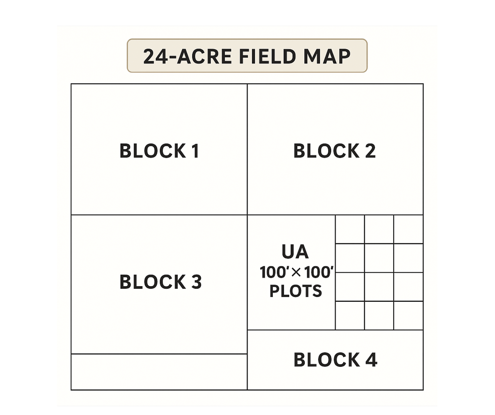
10% Chicken + 90% Dairy
Biochar, zeolite, humic acids, worm castings, mineral fines
Across all treatments, the research team will measure: soil carbon, fungal-to-bacterial ratios, infiltration, compaction, salinity, nutrient-holding capacity, irrigation use, crop performance, and economic viability. The study also compares the role of heavy equipment in industrial farming versus the reduced capital footprint of regenerative approaches.
Agriculture in the desert Southwest faces worsening challenges: depleted soil carbon, compaction, salinity accumulation, rising fertilizer costs, water scarcity, and reduced resilience under heat. Industrial farming systems rely heavily on tillage, chemical fertilizers, herbicides, and large machinery. These practices increase costs and degrade soil biology, creating long-term economic and environmental vulnerabilities.
Regenerative systems—built upon compost, diverse plant exudates, mycorrhizal networks, legumes, reduced disturbance, and water-efficient soil structures—offer a promising alternative. Yet region-specific data for desert conditions is limited, and farmers require evidence-based guidance before shifting practices that affect their livelihoods.
This study addresses the need for: clear comparisons between soil blends, understanding of crop adaptability, insight into biological succession, realistic input cost modeling, and a transitional pathway from industrial to regenerative agriculture.
The goal is not only to identify what works but also to identify what does not, ensuring farmers avoid unproductive soil systems, unsuitable crops, or economically unfavorable strategies.
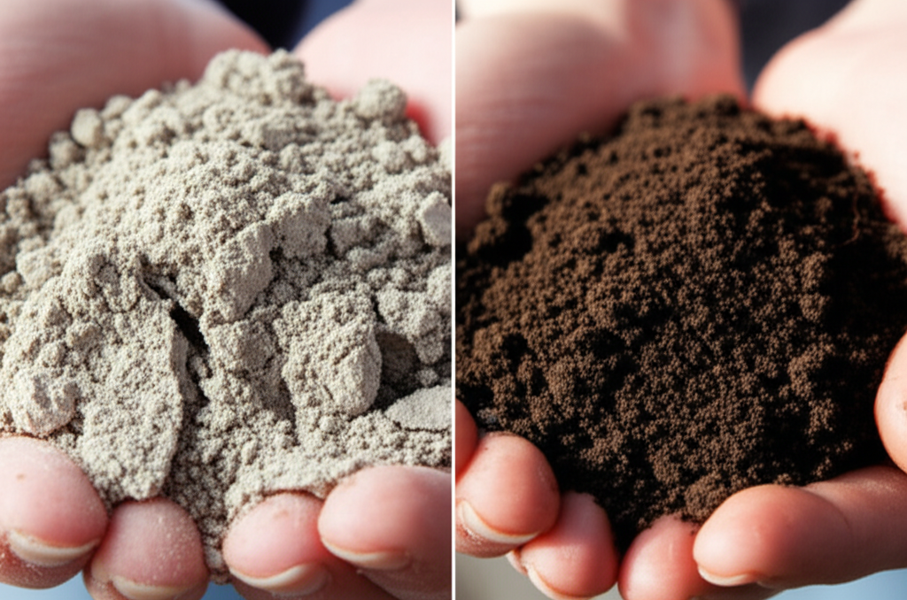
High-carbon municipal green waste for fungal colonization
Nitrogen-rich dairy manure for bacterial activity
Balanced NPK profile blend
Compost-based with biochar, zeolite, humic acids, worm castings, mineral fines
Combined dairy and green waste composts
Base compost with fungal extract applications
Three crop rotations per year support biological succession from bacterial → balanced → fungal-leaning soils:
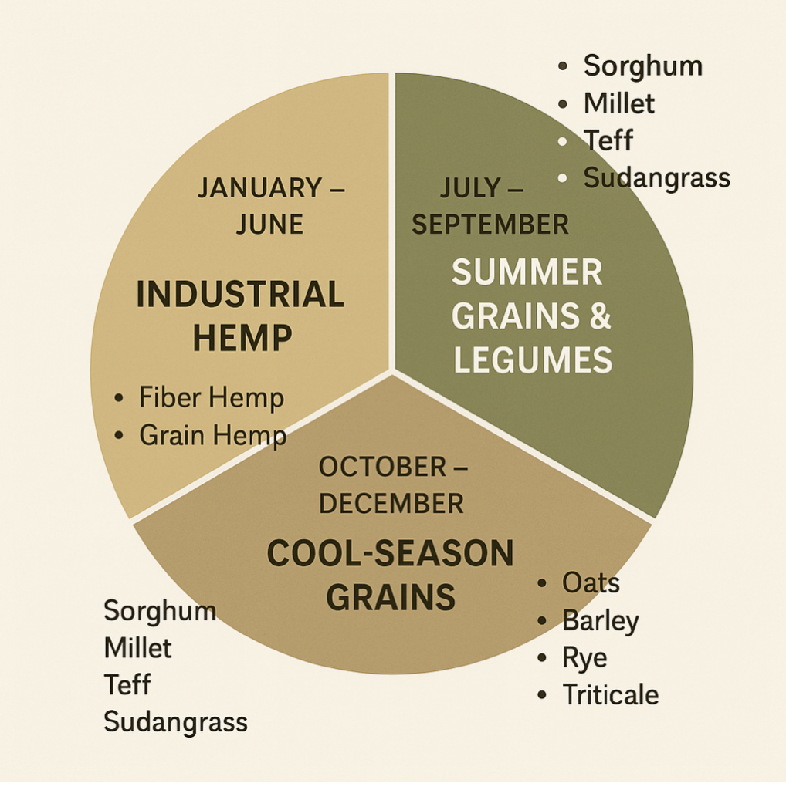
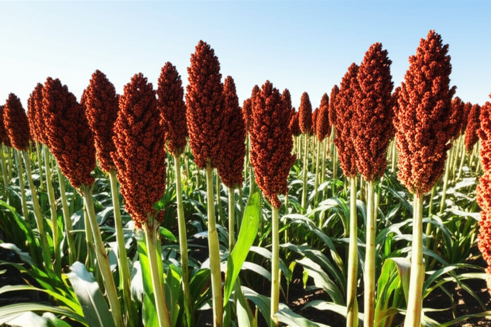
Grown annually as the primary economic crop. Provides exceptional root density, canopy cover, and market value.
Benefits: Deep taproot system, high biomass production, economic output, excellent soil structure building
Grains and legumes selected for high biomass production and mycorrhizal compatibility:
Cool-season grains and legumes for continued soil building:
Compost rates decrease as soil biology becomes self-sustaining
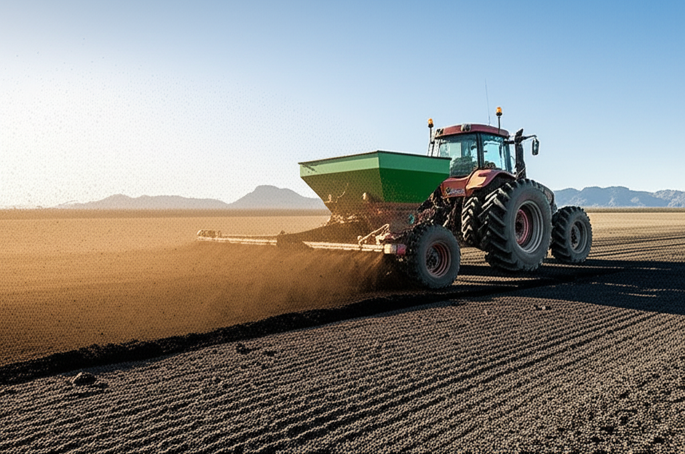
| Year | Rate | Notes |
|---|---|---|
| Year 1 | 1 ton/acre | Full application for initial soil conditioning |
| Year 2 | 0.5–1 ton/acre | Adjusted based on soil test results |
| Year 3 | 0.25–0.5 ton/acre | Maintenance application |
| Years 4–5 | As needed | Only if SAR or infiltration requires correction |
Applied at all seasonal transitions throughout the year:
Comprehensive soil monitoring at baseline and annually tracks the progression of soil health across all treatments.
| SOC | Soil Organic Carbon |
| F:B Ratio | Fungal to Bacterial Ratio |
| Bulk Density | Soil compaction measure |
| Infiltration | Water absorption rate |
| Aggregates | Aggregate Stability |
| EC | Electrical Conductivity |
| SAR | Sodium Adsorption Ratio |
| CEC | Cation Exchange Capacity |
| pH | Soil acidity/alkalinity |
| NPK | Available N, P, K |
| POXC | Active Carbon |
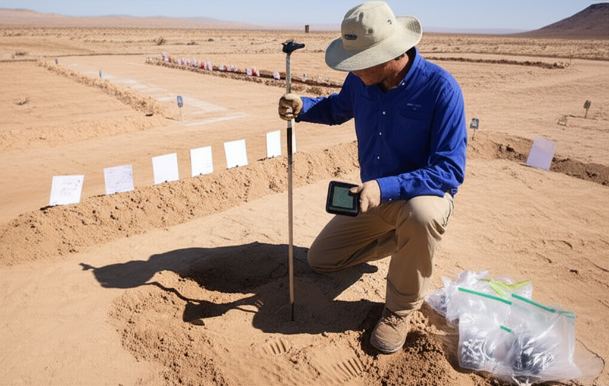
Complete soil profile analysis before any treatments are applied (Year 0)
All metrics measured at the same time each year for consistent comparison
To track and visualize soil health progression across all treatments, we will create a custom interactive dashboard that displays real-time metrics including Soil Organic Carbon (SOC), Fungal-to-Bacterial Ratio (F:B), Bulk Density, Infiltration rates, and Active Carbon levels. This dashboard will enable stakeholders to monitor progress toward targets and compare treatment performance over the five-year study period.
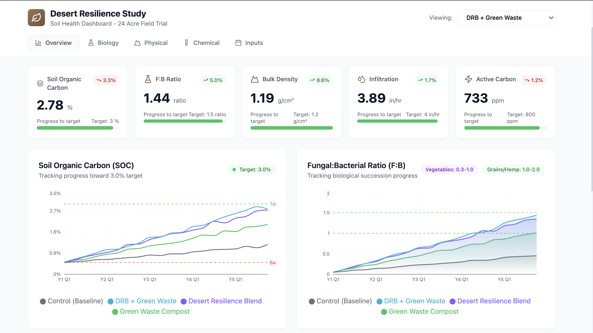
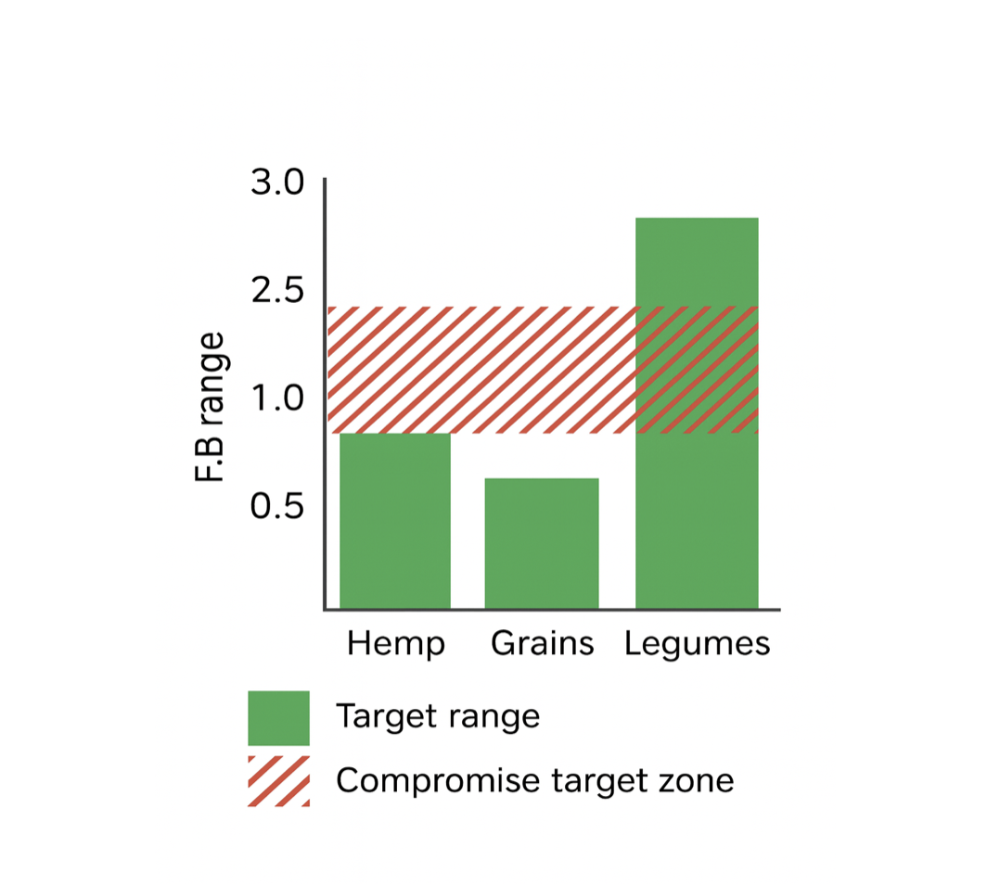
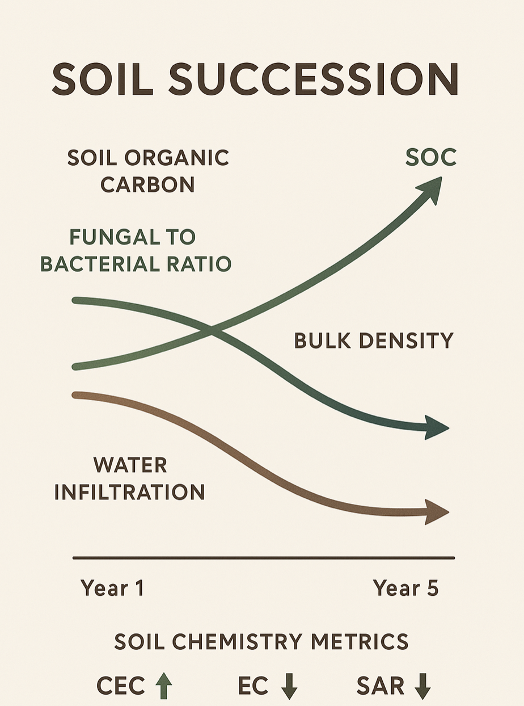
The study provides comprehensive cost-benefit analysis comparing regenerative systems versus industrial agriculture approaches.
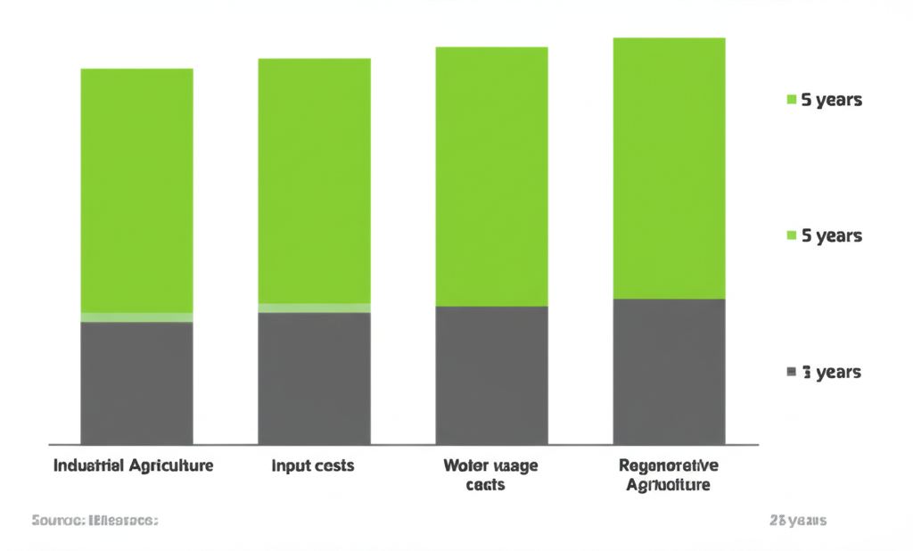
| Factor | Industrial System | Regenerative System |
|---|---|---|
| Capital Equipment | High (large tractors, implements) | Reduced footprint |
| Fertilizer Dependency | High annual cost, increasing | Decreasing over time |
| Water Usage | Standard irrigation rates | Reduced (improved infiltration) |
| Soil Biology | Degrading over time | Improving annually |
| Long-term Trend | Increasing costs, declining yields | Decreasing costs, stable yields |
The economic evaluation produces a comprehensive ROI model for farmers evaluating a regenerative transition, including:
At the end of five years, the study will deliver comprehensive, actionable results for farmers and researchers:
A proven regenerative crop rotation system specifically designed for desert soils
Soil blends ranked by performance, cost-effectiveness, and biological value
Detailed economic comparisons to industrial agriculture with ROI projections
Soil carbon and fungal succession trajectories across all treatments
A comprehensive, field-tested guide enabling farmers to implement the validated system on their own operations, including:
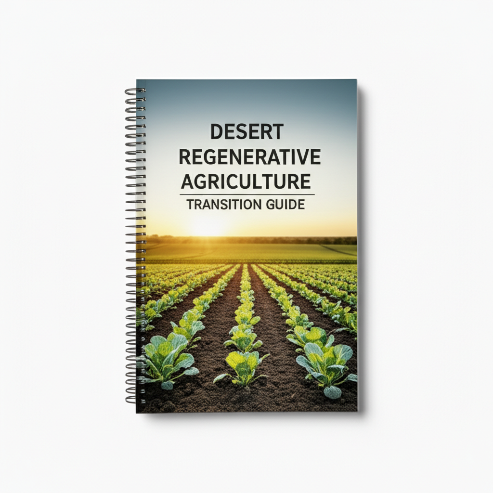
| Extract: | 60 gal/ac |
| Water: | 700–1,000 gal/ac |
| Timing: | Planting or 1–3 leaf |
| Method: | Banded drench |
| Extract: | 50–60 gal/ac |
| Water: | 600–800 gal/ac |
| Timing: | In-furrow or V2–V3 |
| Method: | Nodulation zone |
| Extract: | 70 gal/ac |
| Water: | 800–1,200 gal/ac |
| Timing: | Emergence/transplant |
| Boost: | +30 gal/ac @ 21–30 days |
| Grains (8 ac × 60): | 480 gal |
| Legumes (8 ac × 60): | 480 gal |
| Hemp (8 ac × 70): | 560 gal |
| TOTAL: | 1,520 gal |
| Average dilution: | ~900 gal/ac |
| 24 ac × 900: | ~21,600 gal |
| Crop | Extract Rate | Notes |
|---|---|---|
| Grains | 40 gal/ac | Early season only |
| Legumes | 40 gal/ac | In-furrow or early drench |
| Hemp | 50 gal/ac | Optional mid-season 20 gal/ac |
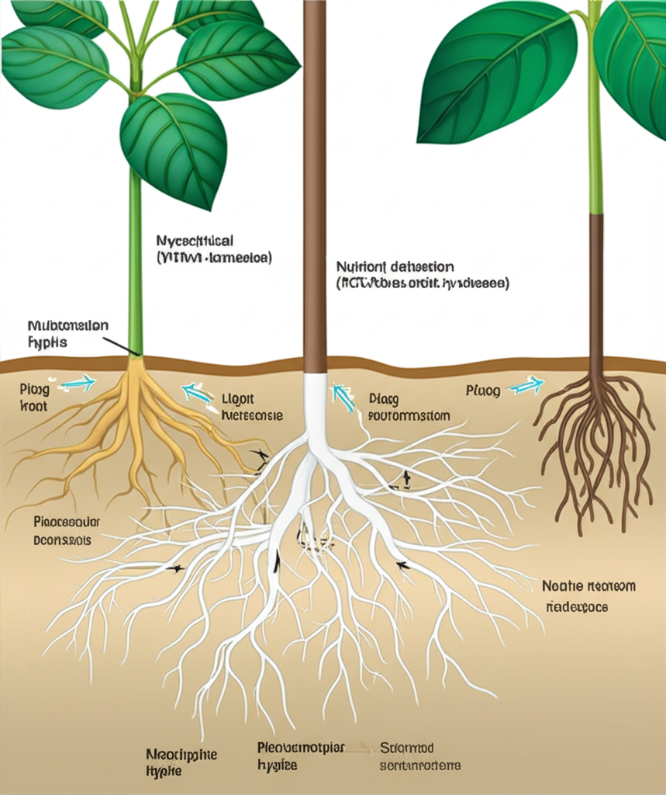
| 50% | Shredded wood chips + leaf litter |
| 25% | Partially composted mulch/wood fines |
| 15% | Vermicompost |
| 5% | Mature dairy compost |
| 5% | Biochar + forest duff |
Build, wet, and let sit 3–6 months for dark, hyphae-loaded fungal material
| Extract Rate (gal/ac) | Water Volume (gal/ac) | Total Mix (gal/ac) |
|---|---|---|
| 50 | 600 | 650 |
| 60 | 800 | 860 |
| 70 | 1,000 | 1,070 |
| 30 (top-up) | 400 | 430 |
For a 60 gal/ac rate at 860 total gal/ac → 2,000-gal tank covers ~2.3 acres per fill
© 2024 Soil Seed & Water. All Rights Reserved.
Prepared for Caroline Kramer